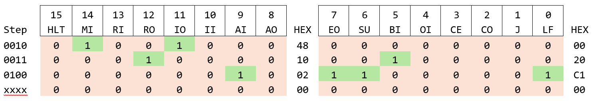

Jonas Ohlsson, 2025
1. Introduction
Around the year 2017 I watched a YouTube series by Ben Eater where he built a breadboard 8-bit computer and I found that project very inspiring. His design was based on the SAP-1 (Simple As Possible) architecture from the book Digital Computer Electronics (Malvino & Brown) which I had not read when I started my own project, but now when I have read (at least the first half of) the book I can see where his inspiration came from. My own project was initially only based on Eater’s project, but since I designed my computer in a simulation program, I had more freedom in doing things the way I wanted instead of adapting to specific circuits Eater used on the breadboard.
In the end, my project ended up very similar to his, both in terms of functions and physical layout of the function blocks, but there are some differences. In this documentation I will only focus on my own project though. The summary, or rather capability, of the computer is the following:
A completely different discussion is whether this design fulfils the requirements to be called a computer. Personally, I feel that the input part is missing – to be able to start a program and then give additional instructions while running. The current design can only load RAM with a program and execute it, either in an eternal loop or until the system stops from the halt command. This could be a computation (for example an addition, or even multiplication), so by definition I guess it is a computer after all.
2. Overview
Let’s begin with a big screenshot of the entire design.
It looks like a big mess, I know. All 7-segment displays except for the three in the bottom right corner were used for development purposes and could be removed. But instead of doing that, let’s look at the design in a block diagram instead – with the same positions for all different parts, excluding debug features.
Most blocks also have Reset and Clock connected to them, and the Control ROM outputs 16 control signals connected to different blocks, neither shown in the diagram. All this will be described in more detail later, but first a quick overview of what the different blocks do. The thick vertical line in the middle is the common 8-bit bus, it is used for both addressing and data – sometimes both at the same time (4 bits each).
ROM Loader
This block can be compared to a ROM cartridge, from where the entire ROM will be copied to RAM. When finished, the simulation can be started for real and execute the program from RAM.
RAM
The computer’s main memory. It must be pre-loaded with a program to execute, but all registers can be accessed for read or write operations. The computer will start program execution at address 0000 so variables (data) are typically placed at higher addresses.
Program Counter
A 4-bit counter (matching RAM size) will tell the computer what instruction in the program (RAM address) to run next. It can increase value in steps, be set to any value on demand (unconditional jump) or depending on flag status (conditional jump).
Addresser
The name might be a bit confusing, but this is basically a counter that keeps track of what instruction step we are currently on (an instruction takes 5 clock cycles by default) and provides that input to the Control ROM so correct control pins are set for each step during a command execution. It operates on inverted (falling) clock edges to have all control pins set and ready before next rising clock edge – triggering most other blocks.
Instruction Register
An 8-bit register that does two things: holds and output the command to Control ROM (4 bits), and another nibble (if needed) to use as data or memory address in the command.
Control ROM
In this ROM, every step for every command is stored. It takes input from the Instruction Register (4 bits) and Addresser (4 bits), use them as an address to the ROM, and finally outputs 16 control signals. This means that this computer could have up to 16 different commands with up to 16 steps for a command. The output signals will be referred to as [CTRL xx] where xx is 0 to 15 seen in various screenshots of the different blocks.
ALU
Arithmetic Logic Unit, the block responsible for mathematical operations. One of the control signals will set it to either addition or subtraction of registers A and B. It will also output to the flag register if the result overflows or becomes zero.
Register A
First register to use with arithmetic operations. An 8-bit value can be stored and read back, or be used as input to ALU.
Register B
Second input to ALU, an 8-bit value can be written to the register but not read back directly to the bus.
Flag Control and Flag Register
In this design, only two flags were implemented: overflow and zero flag. They are stored in a regular 8-bit register and are set from a control signal and the ALU. These flags can be used to make conditional jumps through the Flag Control block.
Output
One byte can show a value from 0-255 on three 7-segment displays. This can be done in different ways and in real life the component cost would be very important. In this simulation, a write-only 8-bit register is used to store the value, and two dividers connected to three identical ROMs will output the stored decimal value.
3. Detailed breakdown
In this style of computers (and probably most others as well), everything begins with the clock. Logic gates updates on rising or falling signals and stays in the new state until the inputs change to fulfil a condition change it. Most of the blocks in this design will only act on rising clock edge, like flip-flops, and most control signals updates on falling edge.
For all the images showing the different blocks, they are cut from the big overhead image. However, they can be modified a little for better fit, and have some unimportant details erased (such as wires near edges not used in the described block. Many of the blocks have sub circuits, shown in an additional image. The [REG] block is used in many places, but the sub circuit will only be shown once. Most of the sub circuits are only used in one place though.
Clock
If using metaphors, the clock could be called the heart of the computer as it is essential to almost every block, and they will not function without it.
The clock block has a developer friendly control scheme that provides a way to switch between the automatic clock [CLK_IN] and a manual mode [MAN_CLK]. This could have been reduced as the simulation can step the clock manually, but if this were built in real life such a feature would have been nice to have. This block has one control signal:
The bottom input will with a high signal disable the clock and instantly halt the computer. The signal [MAIN_CLK] is connected to almost every block in the computer.
RAM
The 16 byte RAM is the primary memory for holding the program to run as well as temporary values used during a program. To store and hold the RAM address, a 4-bit register can be written to from the bus, but not read back. Since addressing is only 4 bits, only the lower nibble is used for that. Apart from the debug inputs and outputs, this block has three control signals:
The top left part is used to load RAM manually and the lines going left off screen are used when loading RAM automatically from the RAM Loader. Bottom inputs are the clock and reset signals. Bus connection is drawn as input on left side and the output on the right side of the symbol.
In the sub circuit bottom left corner we can see that the high nibble from bus input is not used, so the address register is defined as only 4 bits which matches the RAM address input. The MUX and its control signals are used for the manual or automatic loading sequence as explained before. Outputs on the right side will show current address and value in it, but the true bus output must be turned on by the control signal.
An important note with this architecture is that the bus is common for addressing and data. This means that in an operation to read or write, the memory address must be set in one clock cycle, and the data to or from that address is handled in the next.
ROM to RAM Loader
Actually not an important part of the computer, but we should cover this block as it’s a common feature in older computers and it made running different programs much easier once the assembler was finished and it was possible to copy a program from Excel directly into the ROM.
The bottom right part has already been covered; it’s the address input to RAM. Up top is the manual input of data to the bus; it was only used in the beginning when I had to manually program the computer RAM one byte at a time by flipping the address and data switches with control signals and clock. Now, this is almost automated: starting from a reset computer, one must first activate the automatic loader and simply run the computer for 16 clock cycles, then turn the auto load signal off and the computer is ready to be put in run state.
I guess this part could have been automated a bit more with a counter that turns the automatic loader off after 16 cycles and puts the computer into run mode. However, this is still not an important part of the computer design, so I decided to leave it out and maybe revisit the idea in a future project.
This ROM, or cartridge if you will, is loaded with a full program. This is easy to do from the assembler I wrote in Excel, as all commands will be transformed from text and numbers to 16 hex values that can be copied directly into the ROM block and saved in the project. The 4-bit counter will count from 0 to 15 and is simply used as the address to both ROM and RAM so the data ends up in correct position.
It would be a nice feature to automatically, after loading the final byte to RAM, switch off the loader and start the computer. I never tried to implement this though; it didn’t feel like an important addition as the computer is so limited already.
In the image above, the values in the ROM is actually a real program that multiplies 17 by 15 and outputs the result for display. We will return to programming and program examples much later, let’s not get ahead of ourselves.
Program Counter
All commands in the program are stored in the RAM, but usually we don’t run them from top to bottom and then loop around. So, to keep track of where we are in the program we’re using a counter. We can store a value (4-bit of course, matching the RAM), put it out on the bus to read and use as memory address and most importantly we can instruct it to count up one step. For this we have three controls signals:
Clock and reset inputs from bottom, debug value to the right and bus inputs connected to the common bus below. The counter block looks like this:
This is quite straightforward, and this simple design gives us all features described before. In every command this computer has, the first step is to read out the counter value and place it in the memory address register. During next step in an instruction, along with other actions, the program counter will increase value by one.
The observant reader noticed that there is one more block in the first image. It was a late addition to the design which is why it looks a bit squeezed between control bus and the counter block. The functionality actually belongs to the Flag Control and is used during conditional jumps.
The upper in-out line is the default behaviour of a regular unconditional jump command – simply setting a new value to the program counter. The conditional jump command will only set a new program counter value if the corresponding flag is set. These inputs come from the Flag control block, and we’ll cover them later.
Register A & B
The A and B registers are identical in functionality as they both are using the standard register sub circuit, but they are used in slightly different ways. They are mostly used for mathematical functions though, as both registers are connected to the ALU. The A register can be set and read back to the bus, while the B register can only be set. The A block has two control signals:
An important detail is that the upper output (where the display is connected – showing the current register value): it is always connected to the ALU, without control signal. The lower output is connected to the bus and needs to be activated.
The sub circuit has an 8-bit register that works just like the registers do in the other blocks, and this circuit is used in several places in the computer.
The implementation of the B register is almost the same but note that there is only one control signal:
The output enable is not used. Instead, the register is always connected to the ALU and used as secondary input for arithmetic operations.
ALU
As mentioned before, the ALU has two inputs from the A and B registers, and the output result is connected to the common bus. There are two control signals:
There are two flag outputs from the ALU:

The ALU is using an adder circuit which will output the sum and a carry bit if the addition overflows (which means that the value loops around). It also has a carry input which can be used to connect several adders together. In this design, the carry input is used to perform a subtraction instead. If set high the XOR gates flips the B register value and together with the extra carry bit the result is a subtraction instead of addition and therefore means that we’re adding 2’s complement of the B register – a common method used to represent signed integers.
This works quite well but extra care needs to be taken if reg B is larger than reg A and performing a subtraction, that addition of 2’s complement will not overflow the adder, but we need to signal that which is what the MUX and inverted signal does. For example, the calculation 8 – 15 will show the value 249 and have the carry flag set. This is exactly 256 higher than the real result -7, so this needs to be taken into consideration somehow.
To be honest, I did not come up with the idea of using XOR gates to subtract. But I modified the flag outputs to the right when implementing the flag control block and conditional jumps as a final addition to the project. However, before diving into the flags we should cover how instructions work.
Instruction Register
As mentioned before, the RAM will be loaded with a program that contains both commands and data. Every command will take several clock cycles to fully execute, and we need something to keep track of what command is currently being executed. To do this we will use another instance of the same register we’ve used before, and it’s controlled in the same way:
As seen in the image, four bits goes to the right (to the bus, output controlled by IO) and the stored value is always sent down to the Control ROM (only the high nibble is used, but it’s not shown in this view). In the beginning of every command, a new command from RAM will be sent to the Instruction Register and will be executed for the rest of the instruction cycle.
Addresser
The term “addresser” might be a bit confusing but refers to a block that is automatically changing the address in the control ROM. Perhaps it could be called a “sequencer” instead. It’s basically a 4-bit counter that potentially could go through from 0 to 15, but we’re only using 0-4. Together with the Instruction Register output (4 bits) we get all addresses for the Control ROM.
An example will make this clearer: let’s take the command LDA – Load A register (with a value from RAM). It has the instruction code 0001 and this will be passed as the high nibble from the Instruction Register to the Control ROM during the entire instruction’s five steps. The addresser then provides the lower nibble, counting from 0000 up to potentially 1111. The Control ROM would then for every clock cycle output control signals from its stored memory instruction set from addresses 0001 0000 to 0001 1111. As can be seen in the image below, there is a “reset” signal from bit 5 in the decoded value that will reset the addresser and instantly return it to 0000. So, in this design, the Control ROM will only use data from 0001 0000 to 0001 0100 (5 steps).
Another important detail is the [INV_CLK] indicator. The Addresser will act on falling clock edge while almost all other blocks will act on rising edge. The reason is simple: all control signals will be set on falling clock edge, so they are stable and ready on the next rising clock edge.
The left input will invert the clock signal as the counter itself still acts on rising edge. Note the two bottom reset inputs as well, they are used to reset the counter back to zero and the reason for having two inputs is to visually separate different reset functions. The left input is used with the “main” reset signal connected to most blocks, and the right is used for other resets, but they are all doing the same thing.
There are two outputs, one nibble for the Control ROM, and one decoded debug signal to show graphically what step we’re on. That output made it easy to reset at the desired step (bit 5), and also helped a lot during development.
Control ROM
We have mentioned the Control ROM several times before, and if the clock is the heart of the computer, this would be the brain – making sure everything works together. The high nibble comes from the instruction register and will be the same during the entire command execution. The low nibble will start at 0000 and increase by 1 for every clock cycle until it resets at 0101 as mentioned in previous section.
Because only 11 commands were implemented, and a maximum of 5 steps are used for commands, most of the control ROM is unused. However, the benefit of having a clear structure is worth a lot. We could have used a smaller range for the Addresser, maybe only 3 bits. The maximum length of a command would then be 8 cycles, but we could have used an extra bit to increase the number of commands or make variants of them. I never explored this though, as the Instruction Register is designed to manage up to 16 commands and that was enough for this computer.
Together, these inputs form an address, and the contents will be output as control signals – 16 in total. There is actually nothing fancy in the sub circuit, only two ROM chips. The two ROM chips will receive the same address and the 8-bit data in each are output in parallel and gives the 16 control signals. The interesting part lies in the data stored in the ROMs.
The entire data description is covered further down, but let’s take the LDA command used as example before. It is found at address 0001 xxxx (row “10” in both ROMs) and takes up the space of 16 bytes (two rows, matching the Addresser’s theoretical 16 steps) up to “1F”, although only 4 cycles/bytes are required for LDA. All commands are identical for the first two bytes (40 & 14 in the left ROM, and 04 and 08 in the right). This pattern repeats every 16 bytes and can be seen in the beginning of every second row.
This part is called the “fetch cycle” where we fetch the Program Counter value (CO) and place it in the memory Address Register (MI) in the first cycle, and then in the second cycle place the contents from RAM (RO) into the Instruction Register (II) and increase the Program Counter (CE) by 1. The rest of the command is specific for LDA functionality. The command LDA has one nibble (the high, used for Control ROM addressing) to identify the command, and a memory address stored in the low nibble (stays in the Instruction Register). The command is actually saying “copy the contents of RAM address x into Register A”, where the address x is what is stored in the low nibble. For example, the data in RAM could be “1F” where the 1 is the LDA identifier and the F is the RAM address where the data is located.
Next clock cycle (address 0001 0010) takes the Instruction Register lower nibble (IO), the address in RAM where we have the data, and places that into the memory address (MI). As a final step, the RAM content (RO) at the set address is fed into the A Register (AI). All remaining 12 steps (from 0100 to 1111) are all 0x00 in the ROM so during step 0100 nothing will happen in the computer. The feature where the Addresser is reset after 5 cycles will step in after that, so steps 0101 to 1111 are never executed.
The hex values 48 and 12 from the table above can be seen in the Control ROM image before. These are the true control signals created from the higher-level commands (such as LDA, sometimes called macro instructions) and can be called micro instructions. The Control ROM have no idea of what the current program is doing and will behave in the same way for every LDA instruction, even if the parameter can vary.
All commands follow this type of logic, and the instruction set in this computer have lengths from 2 to 5 clock cycles. Per default they will all take 5 cycles to execute. All commands will further down be explained in a similar way as this example.
Flag Control and Flags
In the early instruction set, there was only one jump command: an unconditional jump that sets the RAM address for next command. As an example, it can be used if a program shall only count upwards, show result on display and loop around forever. The program would probably have three key commands: Output value from a Register A, add value from another register and finally the jump command to get back to the first. Not very exciting nor flexible.
The last addition to the computer design was a conditional jump feature and is built out of two parts. First there is a standard register:
Even though the flag register has 8 bits for use, the implementation was completely centred around the jump feature and used only 2 bits. Flags are output from the ALU in case of an overflow or zero condition and are stored with one control signal:
The input to the Control ROM is also connected to a cluster of gates to give a “true” at the correct instruction step – working exactly like the Control ROM. All 16 outputs from the ROM were already used and two more were required for the conditional jumps.
It would have been possible to handle this with another ROM, at least the lower part of the image above. Note the 8 inputs to each OR gate: some are inverted, they correspond to the 0’s in the “command address”. Here we can see that the first one is 0111 0010 and the other is the command 1000 0010, matching the commands 0111 – JC (Jump if Carry), and 1000 – JZ (Jump if Zero). The lower half is the same on both: 0010, which is the first microinstruction after the fetch cycle. This is the discrete way of doing exactly what the Control ROM is doing but takes up more space.
The saved flags are used as inputs to give out a true or false if a conditional jump (Zero or Carry) command is executed and the two resulting control signals are fed into the Conditional Jump block covered in the Program Counter part.
The conditional jumps work by executing the command, which will have a new RAM address stored in the Instruction Register (as a parameter, the lower nibble). But we only want to jump if the associated flag is set – which will come from the Flag Register. One of the outputs (the upper, leaving to the left) will tell the Conditional Jump block that a conditional jump is being executed. Let’s remind ourselves of how it looked:
The control signal(s) will change a regular jump to a conditional jump by being sent through the lower path of the MUX. The AND gate adds the requirement of additional high signal, coming from the command in combination with the corresponding flag. If true, the next clock cycle will store a new address in the counter. Otherwise, the value in the Program Counter will remain.
Output
There are different ways to display data on 7-segment displays. Dedicated drivers, discrete logic or something in between. I went with the last variant, mostly because I wanted to try a ROM style output. For a simulation, it doesn’t really matter.
The register that holds the value works exactly like the registers in other places. It can only be written to and has one control signal:
The actual output operates by splitting the 8-bit value with dividers into hundreds, tens and singles. The first divider has the divider input 64 (which is 100 in decimal) and the second has 0A (which means 10), these results are used as addresses to three identical 16 Byte ROMs. They are prepared with values for 7-segment displays to turn on specific segments based on values 0-15 – corresponding to 0-F. One idea was to be able to switch between decimal and hex display with a single input signal, but this was never implemented as it felt out of scope for this project.
Optimization mode
Another late addition to the computer is not essential for functionality is a form of optimization feature that was mostly added for fun. But it’s in the design, so I’ll cover it in brief detail for the sake of completeness.
The lower right input comes from the control bus (16 signals), and the feature has a manual activation button. The big NOR gate will give a high signal in case all control signals are low. As mentioned several times before, the addresser will reset after five clock cycles, which means that commands will take five cycles regardless of how many actual steps it requires. This circuit will in case of 16 low signals output a high signal to the OR gate and reset the addresser, effectively ending the command immediately after the final micro instruction. For example, the LDA has only four cycles with instruction, so this optimization would end the command after that – making the command 20% faster. A Jump instruction has only one micro instruction after the fetch cycle, so it would be 40% faster.
The final (leftmost ) input to the reset OR gate comes from a the signal [RUN MODE] found in the very first overview image. This is the “start button” to press after RAM is loaded with contents and execution shall start, and the inverter will keep the addresser at step 0 at all times until this happens.
4. Command overview and breakdown
In this section, every command will be explained in detail and broken down to show every micro instruction step. This is the current list of all commands:
The column Parameter means that the second part (lower nibble) of the command contains data (in RAM). That information will in the fetch cycle follow along to the Instruction Register and be used within the command.
First a reminder of the fetch cycle: these two steps are executed at the beginning of every single command. The command Value from the table above in combination with the step value from the Addresser form the 8-bit address to the Control ROM, and the data stored drives all control signals in the table below (16 bits can be written as two HEX values to store in the ROM).
First step is to get the value in the Program Counter (CO) and place it in the RAM Address register (MI). In the second step the value from RAM (RO) is placed in the Instruction Register (II). At the same time the Program Counter value is increased by 1 (CE). All bits on one row are set during the falling edge of clock (because of the inverter in the Addresser) and are then “executed” on the next rising edge on clock.
Also remember that there are two ROMs in parallel in this design, but the address is the same for both. So, at address 0000 0000 the first register will output 0100 0000 and the second 0000 0100, and so on. Because these two steps are present in all commands they will not be covered again, so all command breakdowns will start at step xxxx 0010.
All commands in normal run mode takes 5 clock cycles to execute, even if a command is shorter in terms of micro instructions. NOP for example, has only the 2 cycle long fetch cycle. It will simply run the remaining 3 cycles without doing anything. All 11 remaining bytes (for all commands) in the ROM are set to 0x00 and will never be read. “xxxx” means “the rest”.
In the command description, the “Length” refer to how many clock cycles the command will take. The fetch cycle always takes 2 clock cycles, and can be maximum 5. For example, the LDA has 2 cycles for fetch, 2 cycles for command specific instructions, and one empty cycle. It is therefore described as “Length: 4 (5)”. The examples, where applicable, are displayed in both “written form” and hexadecimal form where we can see what is actually stored in the “ROM Loader cartridge” and later RAM.
0000 – NOP – No Operation
Parameter: None
Length: 2 (5)
The command is not very interesting because it does nothing. If RAM is empty in one or several addresses, the fetch cycle will still do its thing and the computer will continue to run until it finds an address with an actual command. It would also be possible to use it as an extra delay in a loop, but perhaps not in this computer.
Example: NOP – 0x00 – No operation
0001 – LDA – Load A Register
Parameter: RAM address
Length: 4 (5)
Could also be called “Load Accumulator” as it takes a value from RAM and puts it in the A Register – often meant to be used by the ALU, but there is actually nothing stopping us from using the register as a temporary storage register and read the value back without performing an arithmetic operation.
Example: LDA F – 0x1F – Load Reg A with value from memory address F.
0010 – ADD – Add value to the Accumulator
Parameter: RAM address
Length: 5 (5)
Takes a value from the specified RAM address and adds it to the A Register. In case of an overflow (result is more than 255), the Carry Flag will be set.
Example: ADD E – 0x2E – Add value from memory address E to Reg A.
0011 – SUB – Subtract value from the Accumulator
Parameter: RAM address
Length: 5 (5)
Takes a value from the specified RAM address and subtracts it from the A Register. In case of an overflow (or rather underflow) it will set the Carry Flag, or the Zero Flag if the ALU result is zero.
Example: SUB D – 0x3D – Subtract value from memory address D from Reg A.
0100 – STA – Store Accumulator value to memory
Parameter: RAM address
Length: 4 (5)
Stores the value in the A Register to a specific memory address.
Example: STA C – 0x4C – Store value from Reg A at memory address C.
0101 – LDI – Load Reg A Immediately
Parameter: A 4-bit value (0-15)
Length: 3 (5)
Loads Register A with a small value without taking it from RAM. Limited to use only values 0-15 (instead of taking an 8-bit value from RAM) but saves time and RAM usage.
Example: LDI 0 – 0x50 – Store value 0 in Reg A.
0110 – J – Unconditional Jump
Parameter: Target RAM address
Length: 3 (5)
Loads Program Counter with a new address to use in next command cycle. This is an unconditional jump and will simply replace the current value in the Program Counter.
Example: J 3 – 0x63 – Jump to command in RAM address 3.
0111 – JC – Conditional Jump, if Carry Flag is set

Parameter: Target RAM address
Length: 3 (5)
Loads Program Counter with a new address to use in next command cycle. This is a conditional jump and will only replace the Program Counter value if the Carry Flag is set. The command looks identical to the unconditional jump but because of extra circuitry the value in the Program Counter will only be replaced if the Carry Flag is 1.
Example: JC 4 – 0x74 – Jump to command in RAM address 4 if Carry Flag is set.
1000 – JZ – Conditional Jump, if Zero Flag is set
Parameter: Target RAM address
Length: 3 (5)
Loads Program Counter with a new address to use in next command cycle. This is a conditional jump and will only replace the Program Counter value if the Zero Flag is set. The command looks identical to the unconditional jump but because of extra circuitry the value in the Program Counter will only be replaced if the Zero Flag is 1.
Example: JC 0 – 0x80 – Jump to command in RAM address 0 if Zero Flag is set.
1110 – OUT – Output to display
Parameter: None
Length: 3 (5)
Stores value in Register A to the Output Register to display on the 7-segment displays. Note that the value to display can only come from the A Register.
Example: OUT – E0 – Output register A
1111 – HLT – Halt computer
Parameter: None
Length: 3 (5)
Instantly halts the computer by stopping the clock output gate.
Example: HLT – F0 – Halt computer
5. Home-made Excel Assembler
With only the information in the command breakdown section it is possible to write a fully working program. To load it into RAM would take a few operations (copy code into the Loader, load it into RAM and start the computer), but actually no real knowledge of how the computer works. It is also possible to manually program the RAM without the loader (by flipping switches), but it’s a tedious process.
However, it is quite hard to write code in hexadecimal numbers, so I created a helping tool so I could write code with commands and parameters and let Excel automatically convert and combine the cells into hex values which are easy to copy into the ROM in the computer simulation.
It all begins with a lookup table with all commands and their values. Remember: they go into the upper nibble.
The parameter goes in the lower nibble, and it actually doesn’t matter if there is any data there for the parameter-less commands – they will not be used anyway. But it looks cleaner and is less confusing if those commands have the lower half as 0000.
Also remember that the parameter is always a 4-bit value, this always makes the command and parameter one byte combined. A few half-smart cell operations later, and the command value and the parameter value (if applicable) are combined to new values and are ready to copy. It looks like this:
The columns “upper” and “lower” are automatically created from the “CMD/VAL” and “Param.” Columns. The code is written in the light green columns, and the darker green column is the finished code to copy.
By half-smart operations I mean that the automation will create a finished code in hex values and can handle all commands in a proper way, but it’s not smart enough to detect errors, such as too large values or incorrect commands.
I think the code in the example is self-explanatory if comments are read from top to bottom (because this code will only run once). It will simply calculate 28 + 14 - 10 and output the result (32) on the display. The connection from code to the hex values in RAM to instructions in the Control ROM is perhaps not crystal clear, but possible to identify with knowledge about the computer’s architecture.
In the Excel sheet, there are only three key cell operations to transform a command with parameter to a hex value. This can be done in different ways, but just for the sake of documentation they are listed here:
Upper nibble (in binary):
=IFERROR(VLOOKUP(C26; $B$3:$C$18; 2; FALSE); IF(HEX2DEC(C26)>15; DEC2BIN(BITRSHIFT(HEX2DEC(C26); 4); 4); "0000"))
Lower nibble (in binary):
=IF(ISNA(VLOOKUP(C26; $B$3:$C$18; 2; FALSE)); DEC2BIN(BITAND(HEX2DEC(C26); 15); 4); HEX2BIN(D26; 4))
Finished byte (in hex):
=BIN2HEX(F26) & BIN2HEX(G26)
6. Program Examples
To further explain how to code for this computer it might be helpful to look at more examples. However, because of the limitations mentioned in the very beginning, it’s hard to make very interesting programs.
One-way counter
Store value 3 to register address, clear register, then count upwards with that value. Value will roll over 255 and continue counting.
The Jump command on address 5 (to address 3) is unconditional and will always be executed which means that the code will run the three last commands forever. A slightly different variant would be to prepare the value 3 in address F from beginning and simply skip the first two lines, but I wanted to verify that those two commands worked as expected.
Two-way counter
This program will start at 0, count up to 255, then count down to 0 and repeat forever.
The main purpose of this program was to test the conditional jump commands. It will count upwards with one (value from address F) and then jump to address 4 if carry flag is set (we have performed 255 + 1 = 0). If we have not reached this point the program will jump back to address 0 and count up again. Once we jump to address 4 we will perform a subtract operation (with the same 1 from address F). Finally a similar check as before where we jump back to address 0 in case the zero flag is set (we have performed 1 - 1 = 0), otherwise we jump back to address 4 and repeat the subtraction.
Multiplication
The ALU do not support multiplication, this program will perform one “manually”.
By filling up almost the entire memory it is possible to perform a multiplication with a loop method. It will take long time and is limited to a result of maximum 255 though. The idea is to add one value to a “result” address (that starts at 0) and loop this behaviour until the second value has decreased to 0 (by subtracting it with 1 every loop). Once the second value is zero, the conditional jump (JZ) exits the loop, outputs the result to display and then halts the computer. This would probably be a lot faster and more code efficient if the ALU supported multiplication.
7. Final thoughts
This so-called computer was my first time designing a computer, and as already mentioned one could discuss whether it even qualifies as one. However, I learned the foundations to computer design and by doing this documentation I hope that I won’t forget it anytime soon – but rather continue with a next generation computer simulation!